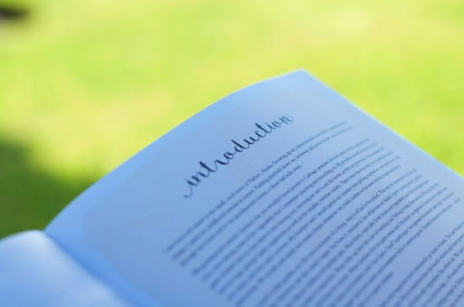

Introduction

Vous vous trouvez actuellement sur mon e-Portfolio!
Vous retrouverez à travers les différentes parties de ce site une présentation complète, si j'y arrive, de ma personne.
Mais laissez-moi tout de même vous faire une petite présentation rapide...
Ce qui au passage me rappelle une belle citation que je vais vous partager.

Léonard de Vinci XVe siècle
C’est à tort que les hommes se plaignent de la fuite du temps, en l’accusant d’être trop rapide, sans voir qu’il s’écoule à la bonne vitesse.
 Présentation
Présentation Motivation
Motivation